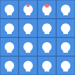
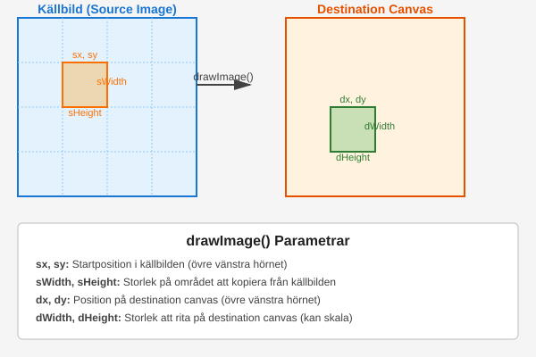

Canvas och grafikprogrammering
Vad är Canvas?
Canvas är ett HTML5-element som låter dig rita grafik, animationer och interaktiva element direkt i webbläsaren. Det fungerar som en rityta där du kan använda JavaScript för att rita former, bilder och text dynamiskt.
Grundläggande koncept
- Canvas-elementet skapar en rektangulär yta på webbsidan
- All ritning sker via JavaScript
- Använder ett koordinatsystem där (0,0) är i övre vänstra hörnet
- Stödjer både 2D och WebGL (3D) kontext
<canvas id="myCanvas" width="500" height="300"></canvas>
const canvas = document.getElementById('myCanvas');
const context = canvas.getContext('2d');
Canvas API
Grundläggande ritfunktioner
Med Canvas API kan du rita olika former och bilder på canvas. context är objektet som du använder för att rita på canvas.
fillRect(x, y, width, height)- Rita fylld rektangelstrokeRect(x, y, width, height)- Rita rektangelkonturclearRect(x, y, width, height)- Rensa specificerat områdebeginPath()- Starta ny ritvägmoveTo(x, y)- Flytta pennanlineTo(x, y)- Rita linje till punktarc(x, y, radius, startAngle, endAngle)- Rita båge/cirkelfill()- Fyll aktuell formstroke()- Rita kontur för aktuell form
Stilar och färger
// Färger och transparens
context.fillStyle = 'red';
context.strokeStyle = '#00ff00';
context.globalAlpha = 0.5;
// Linjestilar
context.lineWidth = 5;
context.lineCap = 'round';
context.lineJoin = 'miter';
Rita med Event handling
Ofta vill man att användaren ska kunna interagera med ritningen. Detta gör man med event handling.
Musinteraktion
canvas.addEventListener('mousedown', startDrawing);
canvas.addEventListener('mousemove', draw);
canvas.addEventListener('mouseup', stopDrawing);
let isDrawing = false;
function startDrawing(e) {
isDrawing = true;
draw(e);
}
function draw(e) {
if (!isDrawing) return;
const rect = canvas.getBoundingClientRect();
const x = e.clientX - rect.left;
const y = e.clientY - rect.top;
context.lineTo(x, y);
context.stroke();
}
function stopDrawing() {
isDrawing = false;
context.beginPath();
}
Animation loops
En animation loop är en loop som uppdaterar canvasen varje gång en ny frame ska visas. Det finns två huvudsakliga sätt att implementera detta:
setTimeout/setInterval (äldre metod)
function animate() {
// Rensa canvas
ctx.clearRect(0, 0, canvas.width, canvas.height);
// Rita nästa frame
drawScene();
// Schemalägg nästa frame
setTimeout(animate, 1000 / 60); // Försöker köra i 60 FPS
}
Denna metod har flera nackdelar:
- Osynkroniserad med skärmen: setTimeout garanterar inte att animationen synkroniseras med skärmens uppdateringsfrekvens
- Batteridränering: Fortsätter köra även i bakgrundsflikar vilket slösar batteritid
- Ojämn timing: Kan resultera i hackiga animationer eftersom timingen inte är exakt
- Prestanda: Kan missa frames om webbläsaren är upptagen med andra uppgifter
requestAnimationFrame (modern metod)
function animate() {
// Rensa canvas
ctx.clearRect(0, 0, canvas.width, canvas.height);
// Rita nästa frame
drawScene();
// Begär nästa animation frame
requestAnimationFrame(animate);
}
Fördelar med requestAnimationFrame:
- Skärmsynkronisering: Synkroniserar automatiskt med skärmens uppdateringsfrekvens (vanligtvis 60Hz)
- Batteribesparing: Pausar automatiskt i bakgrundsflikar
- Jämn timing: Ger konsekvent timing för mjukare animationer
- Prestanda: Optimerar automatiskt renderingen för bästa prestanda
Vad är en sprite?
En sprite är en liten bild som används i animationer. Den består av en serie olika bilder som visas i en sekvens. Såhär kan en sprite se ut:

Sprite handling
Vanligtvis vill man använda sprites i sina animationer. Detta gör man genom att ladda in en bild och sedan rita ut den på canvasen.
Ladda och rita sprites
const sprite = new Image();
sprite.src = 'path/to/sprite.png';
sprite.onload = () => {
ctx.drawImage(sprite, x, y, width, height);
};
Sprite animation
För att användaren ska kunna se animationen av en sprite så måste man rita ut sekvensen av bilderna på canvasen. Detta gör man genom att använda drawImage och sedan rita ut varje frame i sekvensen. drawImage har följande parametrar:
-
imageBilden som ska ritas ut. Kan vara en HTMLImageElement, SVGImageElement, HTMLVideoElement, HTMLCanvasElement, ImageBitmap, OffscreenCanvas eller VideoFrame. -
sx(Valfri) X-koordinaten för övre vänstra hörnet av källbilden. -
sy(Valfri) Y-koordinaten för övre vänstra hörnet av källbilden. -
sWidth(Valfri) Bredden på delen av källbilden som ska ritas ut. Om inget anges används hela bildens bredd. -
sHeight(Valfri) Höjden på delen av källbilden som ska ritas ut. Om inget anges används hela bildens höjd. -
dxX-koordinaten där bilden ska placeras på canvas. -
dy
Y-koordinaten där bilden ska placeras på canvas. -
dWidthBredden bilden ska ritas ut med på canvas. Möjliggör skalning. -
dHeightHöjden bilden ska ritas ut med på canvas. Möjliggör skalning.

Man använder sx, sy, sWidth och sHeight för att rita ut rätt frame i sprite sheet på canvasen.
const frameWidth = 32;
const frameHeight = 32;
let currentFrame = 0;
function animateSprite() {
ctx.clearRect(0, 0, canvas.width, canvas.height);
// Beräkna position i sprite sheet
const row = Math.floor(currentFrame / 4);
const col = currentFrame % 4;
ctx.drawImage(
sprite,
col * frameWidth,
row * frameHeight,
frameWidth,
frameHeight,
x,
y,
frameWidth,
frameHeight
);
currentFrame = (currentFrame + 1) % totalFrames;
}
Collision detection
Rektangulär kollision
function checkCollision(rect1, rect2) {
return rect1.x < rect2.x + rect2.width &&
rect1.x + rect1.width > rect2.x &&
rect1.y < rect2.y + rect2.height &&
rect1.y + rect1.height > rect2.y;
}
Cirkulär kollision
function checkCircleCollision(circle1, circle2) {
const dx = circle1.x - circle2.x;
const dy = circle1.y - circle2.y;
const distance = Math.sqrt(dx * dx + dy * dy);
return distance < circle1.radius + circle2.radius;
}
Optimering och best practices
Performance tips
- Använd
requestAnimationFrameistället försetInterval - Minimera antal canvas-operationer
- Använd offscreen canvas för komplexa renderingar
- Undvik onödig clearRect genom att rita över tidigare innehåll
- Cacha ofta använda värden och beräkningar
Responsiv canvas
function resizeCanvas() {
canvas.width = window.innerWidth;
canvas.height = window.innerHeight;
}
window.addEventListener('resize', resizeCanvas);
resizeCanvas();
Övningsuppgifter
- Skapa en enkel ritapp med olika verktyg (penna, suddgummi, former)
- Implementera ett enkelt spel med rörliga sprites och kollisionsdetektering
- Skapa en partikeleffekt med många rörliga partiklar
- Bygg en enkel animerad graf som visar realtidsdata